Ikea¶
Ampoule¶
Mémo¶
Un petit mémo avec la télécommande Hue à 20€ pour ceux qui, comme moi, vont devoir ré-inclure toutes leurs ampoules Ikea avec l’upgrade en 3.0F…
On appuie sur ON + OFF ( 1 + 0) simultanément pendant 5 secondes à 50 cm de l’ampoule (sous tension bien entendu)
On ouvre le réseau ZigBee de votre coordinateur (ZiGate par exemple)
On éteint puis on remet sous tension l’ampoule qui s’appaire au coordinateur
Pendant que le réseau est ouvert, on retourne la télécommande et à l’aide d’un trombone, on appuie sur le bouton setup pendant 5-10 secondes.
La télécommande joint à son tour le réseau ZigBee
Si on le souhaite, on peut associer la télécommande et l’ampoule en maintenant le bouton ON (1) pendant 5 secondes à 50 cm de l’ampoule (toujours sous tension).
Pour les ampoules recalcitrantes: Je viens de réussir ! J’ai réalisé un scénario qui commande une prise connectée (Ikea aussi tiens :D ). Voici ma méthode qui semble fonctionner, en tout cas chez moi 2/2 OK : Mode inclusion ON du spot Boucle qui fait 6 fois : OFF / sleep 2s / ON / sleep 0.5s .
Nouvelle inclusion¶
Mettre la Zigate en mode inclusion (Bouton Inclusion), la Led bleue de la Zigate doit clignoter…
Faire un reset de l’ampoule en partant de la position allumée, puis 6 fois, éteindre-allumer. Il n’est pas facile d’avoir le reset… et après maintes tentatives, vous devriez récupérer l’ampoule dans Jeedom. Autre solution bien plus simple utiliser une télécommande Philips Hue (Hue Dimmer Switch) et forcer le reset par un bouton I + bouton O appuyés suffisamment longtemps. Une fois associée, il est possible d’avoir besoin d’éteindre, attendre 10 secondes et allumer.
Déjà inclue¶
Zigate en fonctionnement normale
Éteindre l’ampoule 15s puis la rallumer
Identify¶
Ce bouton est créé au moment de la création de l’objet. Celui ci permet de demander à l’ampoule de se manifester. Elle se met à changer d’intensité ce qui nous permet de la repérer dans une groupe d’ampoules par exemple.
Bind¶
Identifiez l’ampoule que vous voulez paramétrer:
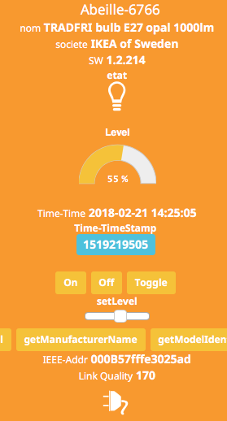Récupérer son adresse IEEE, son adresse courte (ici 6766).
De même, dans l’objet Ruche récupérez l’adresse IEEE (Si l’info n’est pas dispo, un reset de la Zigate depuis l objet ruche doit faire remonter l’information).
Mettre dans le champ:
Titre, l’adresse IEEE de l’ampoule que vous voulez paramétrer
Message, le cluster qui doit être rapporté, et l adresse IEEE de la Zigate.
image:Capture_d_ecran_2018_02_21_a_23_26_49.png
Attention la capture d’écran n’est pas à jour pour le deuxième champs.
Dans message mettre::
targetExtendedAddress=XXXXXXXXXXXXXXXX&targetEndpoint=YY&ClusterId=ZZZZ&reportToAddress=AAAAAAAAAAAAAAAA
Exemple avec tous les paramètres::
targetExtendedAddress=90fd9ffffe69131d&targetEndpoint=01&ClusterId=0006&reportToAddress=00158d00019a1b22
Après clic sur Bind, vous devriez voir passer dans le log AbeilleParser (en mode debug) un message comme:
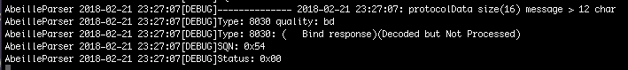qui confirme la prise en compte par l’ampoule. Status 00 si Ok.
Rapport Manuel¶
Ensuite paramétrer l’envoie de rapport:
Titre, l’adresse courte de l’ampoule
Message, le cluster et le paramètre dans le cluster
Attention a capture d’écran n’est pas à jour pour le deuxième champs.:
targetEndpoint=01&ClusterId=0006&AttributeType=10&AttributeId=0000 pour retour d'état ampoule Ikea
targetEndpoint=01&ClusterId=0008&AttributeType=20&AttributeId=0000 pour retour de niveau ampoule Ikea
De même vous devriez voir passer dans le log AbeilleParse (en mode debug) un message comme:
qui confirme la prise en compte par l’ampoule. Status 00 si Ok.
Après sur un changement d’état l’ampoule doit remonter l’info vers Abeille, avec des messages comme:
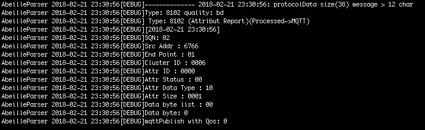pour un retour Off de l’ampoule.
HomeBridge¶
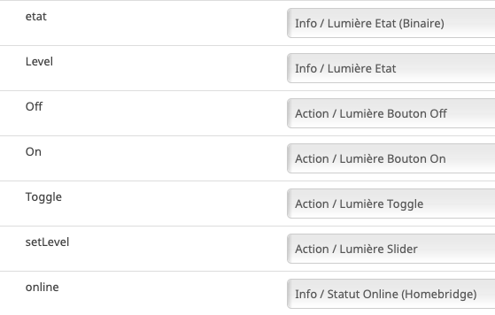Télécommande Ronde 5 boutons¶
Télécommande réelle¶
Introduction¶
Note
Les télécommandes envoient des commandes directement aux équipements mais pas à la zigate. De ce fait Abeille/Jeedom ne recoive pas d’info sur l’utilisation des télécommandes.
Note
C’est aux équipements qui reçoivent les demandes de la télécommande réelle de renvoyer leur état vers Jeedom.
Note
A partir du firmware 3.0f on peut récupérer des appuis sur les boutons de la télécommande avec une configuration spécifique de groupe au niveau de la ZiGate, ce qui permet de déclancher des scénarii par exemple.
Nouvelle inclusion¶
Mettre la Zigate en mode inclusion (Bouton Inclusion), la Led bleue de la Zigate doit clignoter…
Prendre la telecommande Ikea et faire 4 appuis sur le bouton OO au dos de la télécommande. La télécommande doit se mettre à flasher rouge en face avant. La télécommande doit apparaitre dans Jeedom.
Si cela ne fonctionne pas, il est possible d’interroger le nom pour créer l’objet (Originale solution).
Originale solution:¶
Note
Cette solution est la toute premiere version dans Abeille et est dans la documentation pour garder une trace mais ce n’est pas la méthode recommandée.
Il faut connaitre l’adresse de la télécommande.
Puis dans la ruche demander son nom. Par exemple pour la télécommande à l’adresse ec15
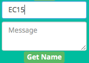et immédiatement après appuyez sur un des boutons de la télécommande pour la réveiller (pas sur le bouton arrière).
Et après un rafraichissement de l’écran vous devez avoir un objet
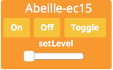Il faut ensuite éditer les commandes en remplaçant l’adresse de la télécommande par le groupe que l’on veut contrôler
Note
Il n’est plus nécessaire de faire la modification dans les commandes mais mettre l’Id du groupe dans les parametres.
La configuration
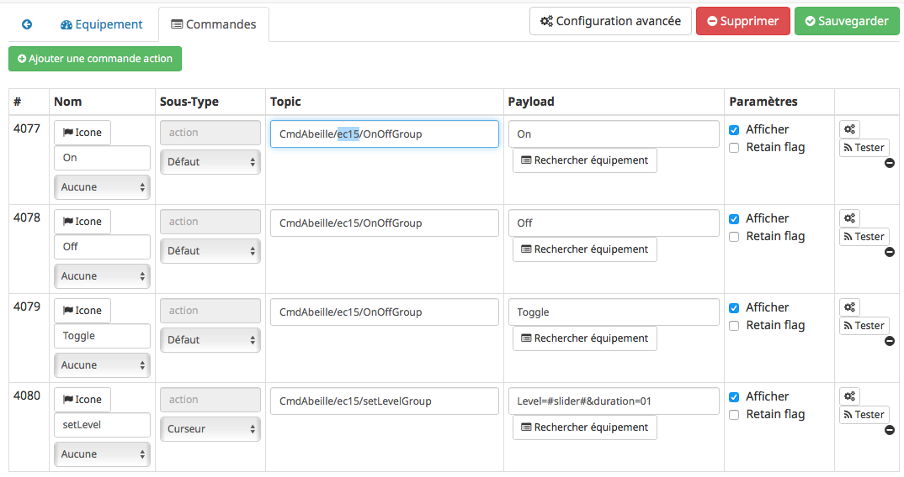va devenir
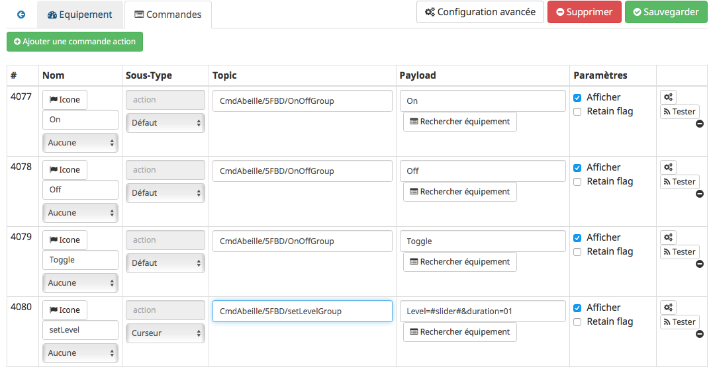pour le groupe 5FBD.
Leave¶
4x sur bouton arrière
Groupes¶
Récupérer le groupe utilisé par une télécommande
Avoir une télécommande et une ampoule Ikea sur le même réseau Zigbee. Attention l’ampoule va perdre sa configuration. Approcher à 2 cm la télécommande de l’ampoule et appuyez pendant 10s sur le bouton à l’arrière de la télécommande avec le symbole “OO”. L’ampoule doit clignoter, relâcher le bouton. Voilà la télécommande à affecté son groupe à l’ampoule Il suffit maintenant de faire un getGroupMemberShip depuis la ruche sur l’ampoule pour récupérer le groupe. Merci a @rkhadro pour sa trouvaille.
Il existe un bouton « link » à côté de la pile bouton de la télécommande. 4 clicks pour appairer la télécommande à la Zigate. Un appuie long près de l’ampoule pour le touchlink.
Programmer¶
Il est aussi possible de définir le Groupes d’une télécommande depuis Abeille (Ikea Telecommande ronde 5 boutons et telecommande Ikea 2 bouton On/Off).
Pour ce faire, il faut utiliser la commande « Set Group Remote » et réveiller la télécommande. En gros la tetecommande étant sur pile, elle dort pour ne pas consommer de courant et ne peut pas entendre les demandes d’Abeille/ZiGate. Il faut donc la reveiller, pour cela un appui sur un de ses 5 boutons la reveille pendant quelques secondes. En fait, elle envoie l info d un bouton appuyé puis ecoute pendant quelques secondes et c est la qu on peut lui demander de prendre une configuration de groupe. Donc definir le group dans le champ Id, appui sur un bouton de la telecommande et « Set Group Remote ».
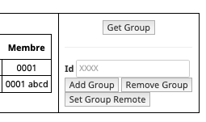Attention
« Set Group Remote » ne devrait fonctionner que pour les telecommande Ikea.
Attention
Comme il faut etre synchrone, il peut etre necessaire de ci prendre à plusieurs fois pour que cela fonctionne.
Télécommande Virtuelle¶
La télécommande virtuelle est un objet Jeedom qui envoies les commandes Zigbee comme si c’était une vrai télécommande IKEA.
Vidéo: Configuration Telecommande Ikea Réelle et simulée dans Jeedom.
Pour créer un télécommande, utilisez les commandes cachées dans la ruche:
Ouvrir la page commande de la ruche et trouver la commande « TRADFRI remote control ».

Remplacez « /TRADFRI remote control/ » l’adresse du groupe que vous voulez contrôler. Par exemple AAAA.

Sauvegardez et faites « Tester ».
Vous avez maintenant une télécommande pour contrôler le groupe AAAA.

Ouvrez l’équipement « Abeille-AAAA » et ouvrez le tab « Parameter ».

et définissez le groupe à controller dans le champ Groupe.
Récupération¶
Récupération des appuis Télécommande Ikea dans Abeille
Après avoir récupéré le groupe utilisé par la télécommande, vous pouvez ajouter la Zigate à ce groupe ainsi Abeille recevra les demandes de la télécommande. Attention la Zigate est limitée à 5 groupes soit disons 5 télécommandes.
Pour ce faire dans Abeille, ajouter les groupes à l’objet « Ruche » qui représente la Zigate.
Vous pouvez aussi forcer le groupe utilisé par la télécommande en sélectionnant la télécommande ikea, en mettant le groupe dans le champ Id puis clic sur le bouton « Set Group Remote » et dans la seconde qui suis en appuyant sur un bouton de la télécommande pour la réveiller. Il peut être nécessaire de le faire plusieurs fois du fait du timing un peu spécifique.
C’est aussi valide pour le bouton On/Off Ikea.
https://github.com/fairecasoimeme/Zigate/issues/6
Button |
Pres-stype |
Response |
command |
attr |
|---|---|---|---|---|
down |
click |
0x8085 |
0x02 |
None |
down |
hold |
0x8085 |
0x01 |
None |
down |
release |
0x8085 |
0x03 |
None |
up |
click |
0x8085 |
0x06 |
None |
up |
hold |
0x8085 |
0x05 |
None |
up |
release |
0x8085 |
0x07 |
None |
middle |
click |
0x8095 |
0x02 |
None |
left |
click |
0x80A7 |
0x07 |
direction: 1 |
left |
hold |
0x80A7 |
0x08 |
direction: 1 => can t get that one |
right |
click |
0x80A7 |
0x07 |
direction: 0 |
right |
hold |
0x80A7 |
0x08 |
direction: 0 => can t get that one |
left/right |release |
0x80A7 |
0x09 |
None => can t get that one |
|
down = brightness down, up = brightness up,
middle = Power button,
left and right = when brightness up is up left is left and right is right.
Holding down power button for ~10 sec will result multiple commands sent, but it wont send any hold command only release.
Remote won’t tell which button was released left or right, but it will be same button that was last hold.
Remote is unable to send other button commands at least when left or right is hold down.
Reponse 0x8085 correspond à l’info Up-Down dans le widget.
Reponse 0x8095 correspond à l’info Click-Middle dans le widget.
Reponse 0x80A7 correspond à l’info Left-Right-Cmd et Left-Right-Direction dans le widget.
A partir de la vous pouvez déclencher des scénarii dans Jeedom.
Attention lors de l’utilisation de la télécommande, dans Abeille elle sera mis a jour et vos scénarii déclenchés mais si vous avez des équipements Zigbee sur ce groupe ils seront aussi activés. Par exemple vous pouvez avoir une Ampoule Ikea sur le groupe de la télécommande qui réagira aux demandes de la télécommande directement en Zigbee (même si Jeedom est HS) et avoir un scénario qui se déclenche en même temps pour ouvrir les volets en zwave ou autre.
Le capteur IR Exterieur Ikea envoie Click-Middle lors de la detection d’une présence.
Gradateur¶
Un clic sur OO¶
Un clic sur OO envoie un Beacon Request. Même si la zigate est en inclusion, il n’y a pas d’association (Probablement le cas si déjà associé à un autre réseau).
4 clics sur OO¶
Message Leave, puis Beacon Requets puis association si réseau en mode inclusion. Une fois associé, un getName avec un réveil du gradateur permet de récupérer le nom.
Voir la télécommande 5 boutons pour avoir plus de détails sur le contrôle de groupe,…
Prise¶
Nouvelle inclusion¶
Mettre la Zigate en mode inclusion (Bouton Inclusion), la Led bleue de la Zigate doit clignoter…
Faire un reset de la prise en insérant un petit trombone dans le trou pres de la led de la prise. Attendre 5s, la prise doit apparaitre dans Jeedom.
Télécommande¶
Simuler la télécommande¶
Pour créer une Telecommande simulée, clic sur l icone Télécommande:
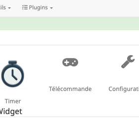apres rafraichissement de l’écran vous aurez une telecommande:
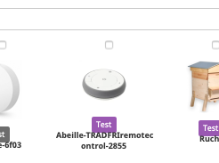Il suffit maintenant de mettre l’Id du groupe dans ses parametres.
Récupérer un groupe¶
Cette opération est un peu délicate mais doit permettre de récupérer l’adresse de groupe utilisée par la télécommande suite aux opérations ci dessus. Dans le futur ce devrait être automatique.
Aller dans la page de configuration du plugin et clic sur « Network » pour faire apparaitre les paramètres dans l’Ampoule:

Sur l’objet Ampoule vous devez vous le champ « Groups » apparaitre sans information:

Recuperons l’adresse de l ampoule, en ouvrant la page de configuration de l ampoule:
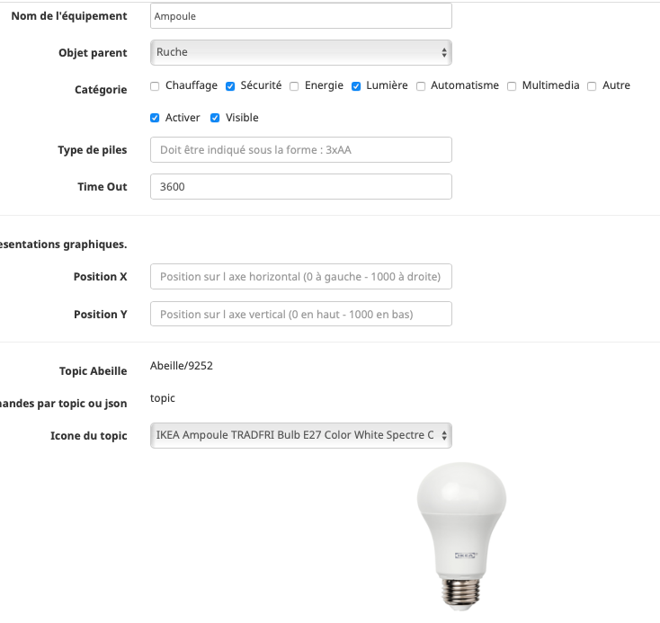Le champ « Topic Abeille » contient l’adresse, ici « 9252 ».
Interrogeons maintenant l’ampoule, avec un getGroupMemberShip depuis l objet Ruche:

Indiquez l’adresse de l ampoule.
Maintenant le champ « Groups » de l’ampoule doit contenir l’adresse de groupe:
ici le groupe utilisé par la télécommande est « f65d ».
Maintenant nous pouvons mettre à jour la télécommande dans Jeedom. Ouvrez les commandes de la télécommande:
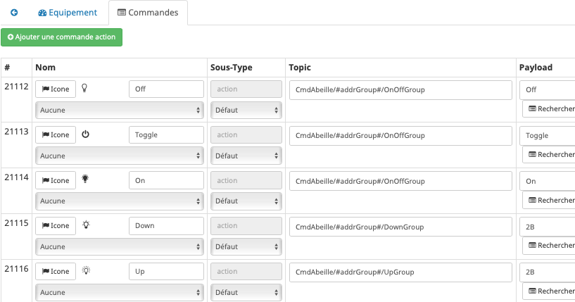Dans le champ « Topic » des commandes vous pouvez voir le texte =addrGroup= qu’il faut remplacer par la valeur du groupe, ici « f65d » et sauvegarder.
Cela donne:
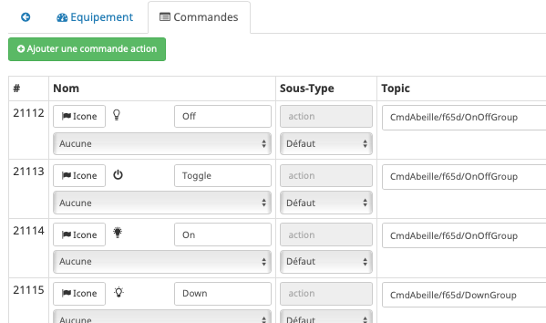Maintenant vous pouvez commander votre ampoule depuis la Télécommande physique et depuis la Télécommande Jeedom.

PS: Les scénarios ne sont pas implémentés pour l’instant (30/10/2018):
Sc1, Sc2, SC3 sur la télécommande dans Jeedom,
et les boutons « Fleche Gauche », « Fleche Droite » de la télécommande physique.
Transfo¶
Inclusion¶
appui bouton reset 3s avec zigate en mode inclusion.
Store¶
Inclusion en appuyant 8s sur les deux boutons en face avant du store et zigate en mode inclusion.
Un device doit se créer dans Abeille et vous pouvez commander le store.
Si vous voulez controler le store avec la telecommande store, lui ajouter un groupe. Par defaut la télécommande utilise le groupe 0000.
Telecommande Store¶
Inclusion en 4x fois appui sur bouton arriere avec zigate en mode inclusion.
Par defaut la telecommande adresse les messages au groupe 0000. Positionner l’adresse du groupe que vous souhaitez avec la command « Set Group Remote » afin que la telecommande physique utilise ce groupe. Et renseigner dans les parametres de la telecommande dans jeedom la valeur du groupe pour que la telecommande virtuelle utilise le meme groupe.
Attention cette telecommande n’est pas identique à la télécommande I/O, elles n’envoient pas les même commandes. Celle ci envoie des commandes pour des stores (Up/Down) alors que celle I/O envoie des commandes de type On/Off. Donc une I/O ne peut pas commander un store et une telecommande store ne peut pas commander une prise ou une ampoule.
L’objet Telecommande créé dans Abeille permet d’avoir les trois commandes Up/Stop/Down. Par défaut, la télécommande dans Abeille enverra les commandes à tous les stores en même temps. La fonction de groupe ne fonctionne pas. Renseigné tout de même le parametre Groupe dans le tab Param mettre une valeur commme 0000. Peut être qu’un jour cette valeur sera utilisable.
Bouton des store IKEA Open/close E1766 TRADFRI et son store associé¶
Merci a seraf pour son petit texte:
Globalement, ce que j’ai fait:
J’ai inclus le repeteur (j’en vois toujours pas l’utilité …) en restant appuyé 5 secondes sur le bouton reset J’ai inclus la télécommande en appuyant 4 fois sur le bouton d’association J’ai inclus mes stores en appuyant 5 secondes sur 2 boutons Une fois cela fait, j’ai assigné un groupe aux appareils. C’est expliqué dans la documentation, mais c’est vrai que c’est pas « user friendly ». Il faut selectionner les stores que l’on va utiliser avec la télécommande via la checkbox au dessus des équipements. Dans la section en dessous des équipements (celle ci s’appelle groupes), il faut mettre un numero de groupe à 4 chiffres. Par exemple on peut mettre 0000, mais aussi 0001 etc. Donc j’ai « ajouté » le groupe 0000 à mes 2 stores. (Add Group).
Pour la télécommande, même procédure, je lui ai mis 0000 par contre il faut cliquer sur « Set Group Remote ». Une fois cela fait, la télécommande peut controler les stores ;-)
Routeur (Repeteur)¶
Mettre la zigate en mode inclusion et un clic sur le bouton reset du routeur et il doit rejoindre le réseau.
Note: ce n’est pas un répéteur comme on peut le lire partout mais c’est un routeur.
IR - Detecteur de presence (E1525/E1575)¶
En fait le E1575 se comporte comme le E1525 (avec de subtilités).
Il faut voir qu’une fois qu’il a envoyé une demande d’allumage il ne renverra pas de nouvelle demande avant 95s. C’est important pour la suite. Par defaut il utilise le groupe 0000. Pour définir le groupe avec lequel il va discuté, il faut faire un set Group Remote avec le bon timing. Pas évident car aucune indication n’est visible (Perso je peux le voir avec le sniffer). La manip a faire est la suivante.
mettre le detecteur en mode jour et nuit Cacher le detecteur pendant au moins 95s selectionner le detecteur dans la conf abeille saisir le groupe, par exemple AAAA faire Set Group Remote et immediatement de-caché le capteur pour qu il vous detecte et se reveille pour envoyer sa commande Voila le capteur doit etre programmé, sinon refaire la manip. Ajouter le groupe a une ampoule ici AAAA attendre 95s declencher le capteur en bougeant devant lui et l ampoule doit s allumer.